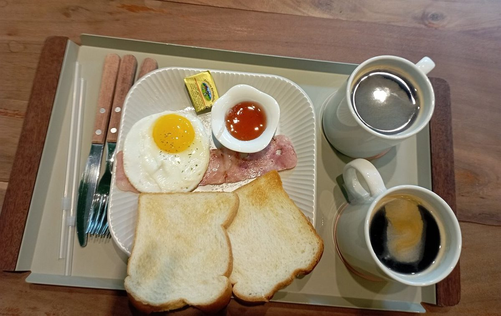
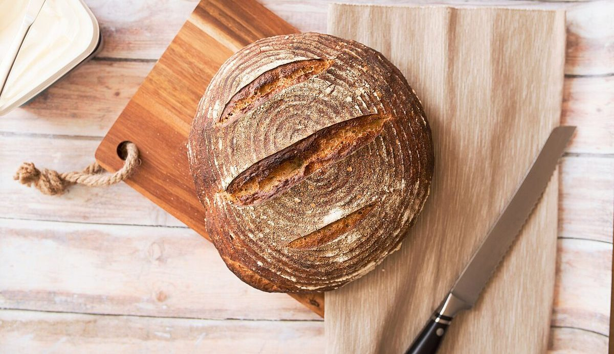
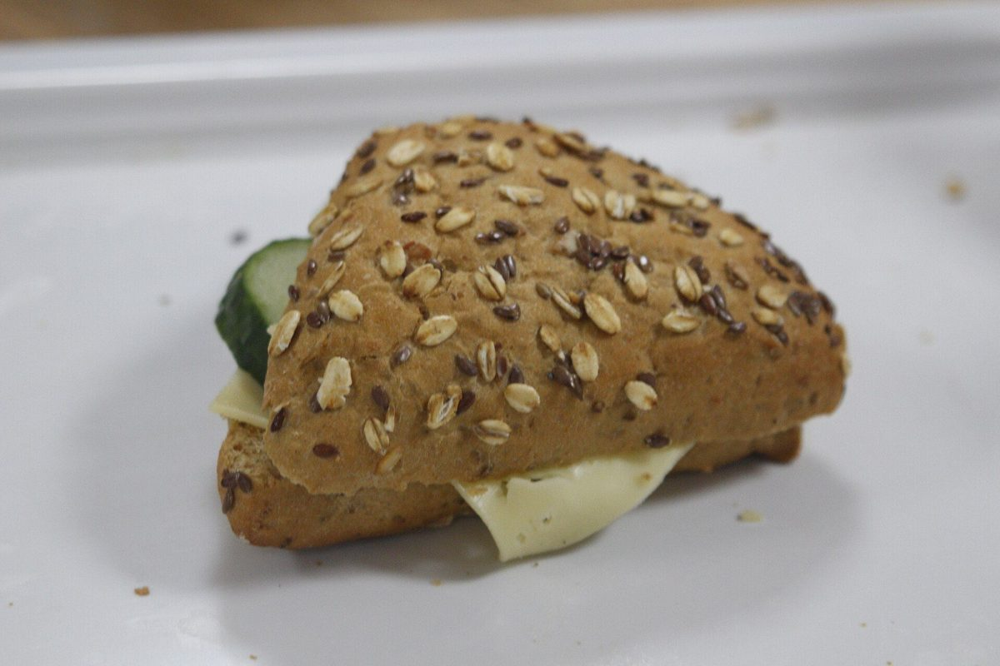
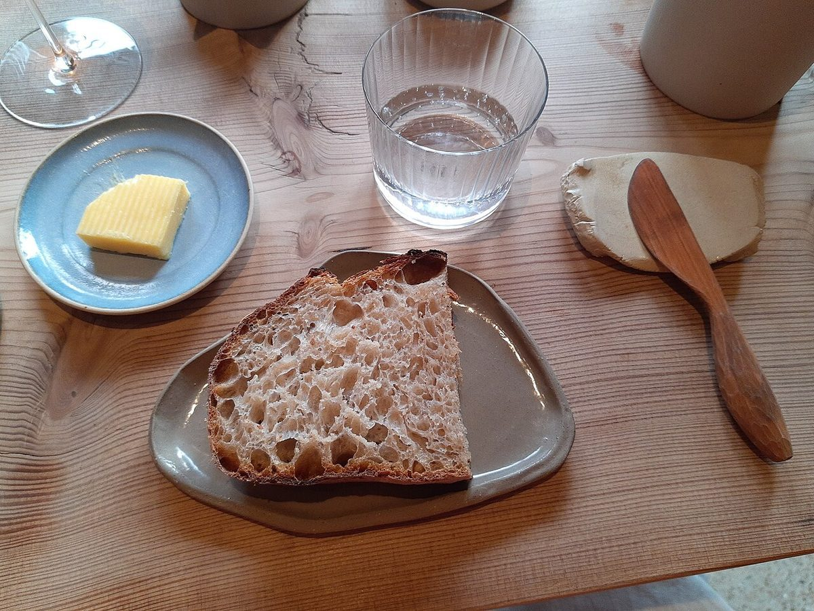
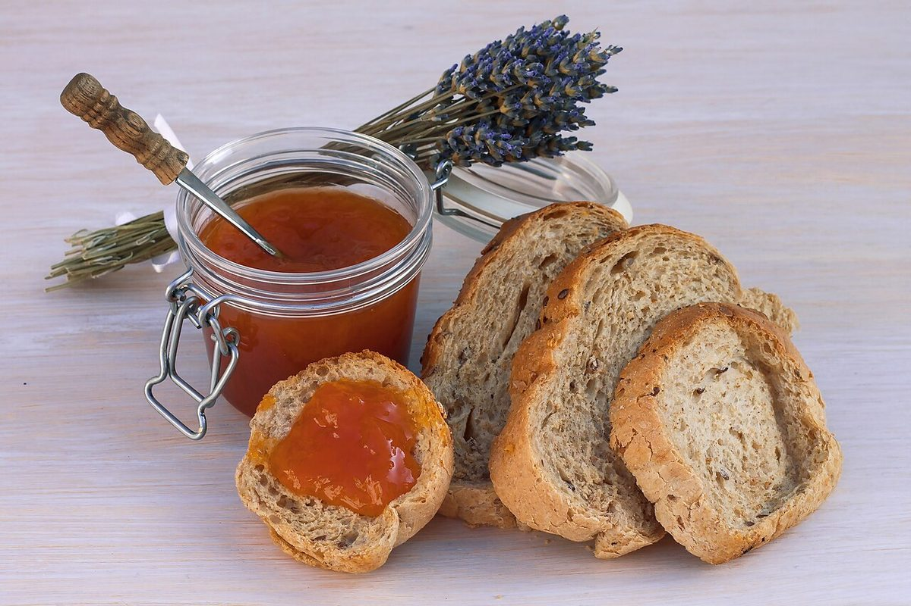

パン屋 / 和歌山県和歌山市
Pandelica
和歌山県和歌山市のパン屋「Pandelica」のご案内ページです。副題は「日常の食事になるパン」。営業時間やパンの内容など、詳しいことは準備中です。まずはInstagramをのぞいてみてください。
日常の食事になるパン

制作側の連想
仕切り皿に並べてみる
屋号「Pandelica」の由来は分かりません。制作側は、響きから「パン」と、デリ(惣菜)のような語感を連想しました。ただの連想で、断定ではありません。副題の「日常の食事になるパン」からは、仕切りのあるトレイに主役も脇役も並ぶ食卓を連想し、このページを「仕切り皿」の作りにしました。制作側の連想で、お店の理念・由来とは無関係です。
仕切り皿(すべてイメージ)
主・副・添え。ひと皿ぶんのパン。
写真は国外・撮影地不明のフリー素材です。お店で扱うパンとは限りません。区画の名前は制作側が付けました。
主板の上の丸パン(イメージ)

副はさんだパン(イメージ)

添パンとバター(イメージ)

袋
ロールパンのかご(イメージ)
甘ジャムとパン(イメージ)
